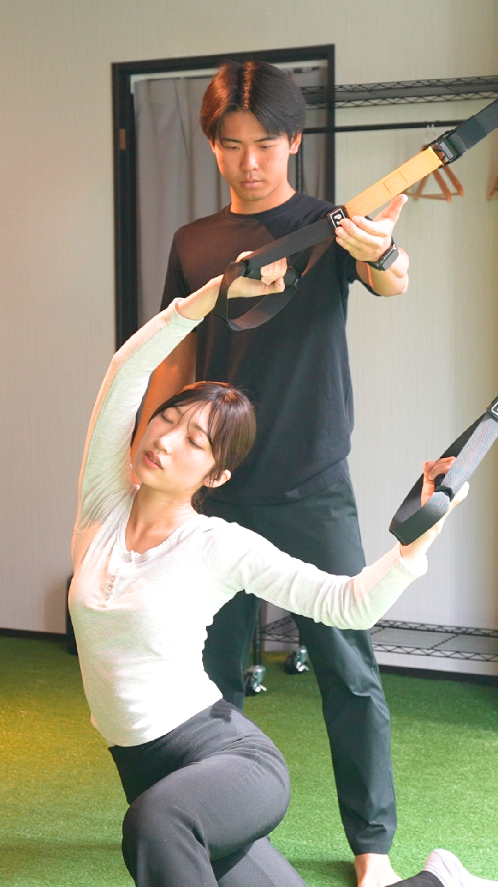
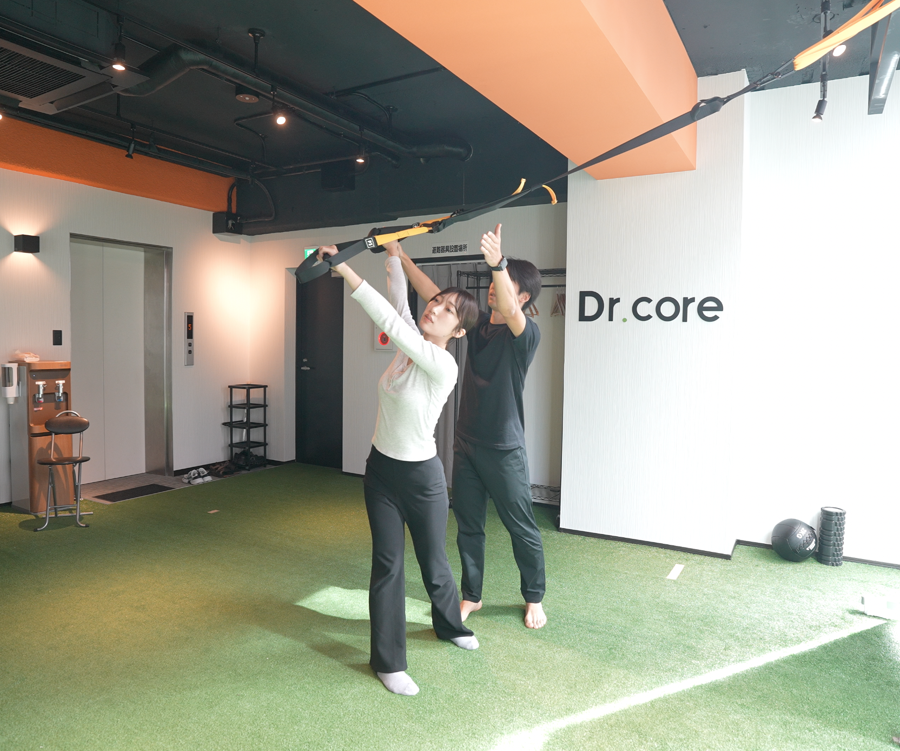
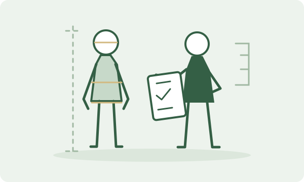
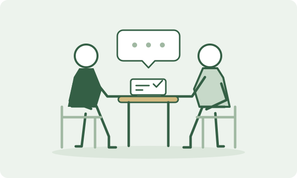
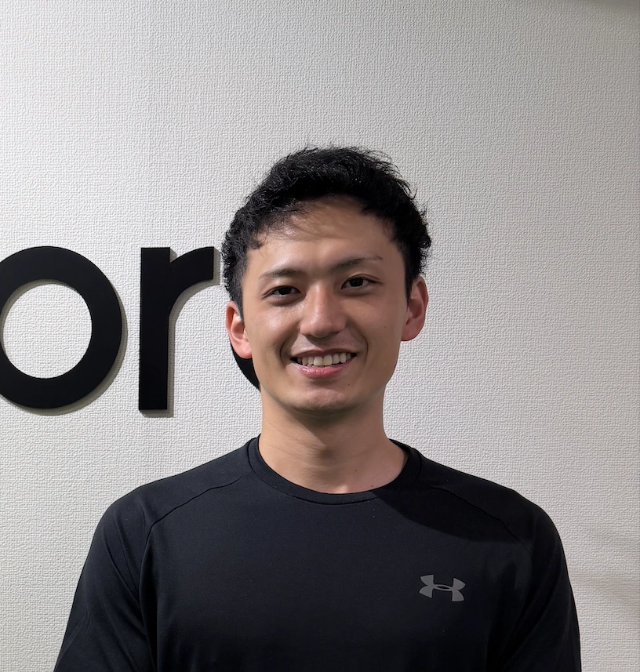
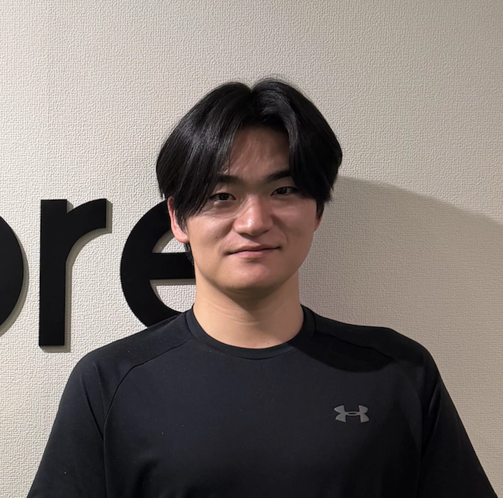
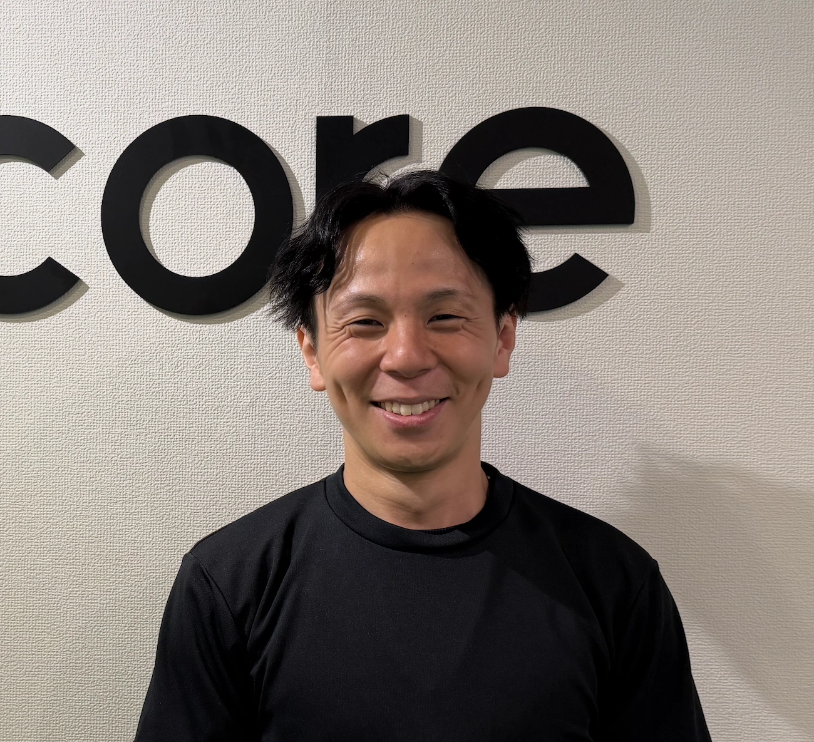
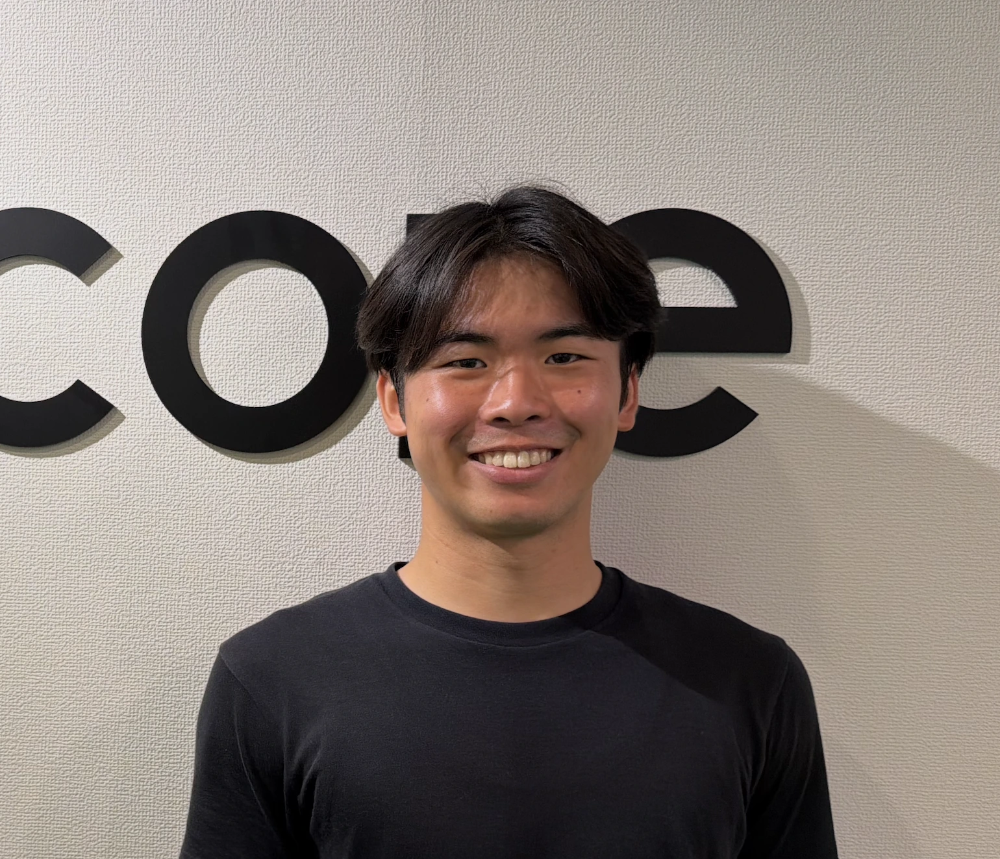
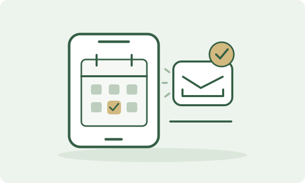

01
01プロが導く、最適なストレッチ
身体の状態や柔軟性に合わせて、専門トレーナーがマンツーマンでサポート。自分では伸ばしにくい部分まで、一人ひとりに合わせて丁寧にアプローチします。

本八幡店本八幡駅 徒歩2分
器具に支えられながら、自分では届かないところまで。
30分のマンツーマン自重ストレッチ
しっかり寝たはずなのに、朝から身体がだるい
デスクワークが続くと、首や肩が重くなる
立ち上がるたびに、腰の重さが気になる
ふと鏡を見ると、背中が丸くなっている
まっすぐ立っているだけで、腰がつらい
以前より、長く歩くと疲れやすくなった
座りっぱなしの仕事や、毎日の家事。
気づかないうちに、身体に力が入っていませんか。
Dr.coreでは、一人ひとりの身体の状態に合わせた自重ストレッチで、
柔軟性や動きやすさの改善をサポートします。
平日10:00〜15:00
平日10:00〜15:00なら、日常のすき間に通いやすいデイタイムプランをご利用いただけます。
平日デイタイムプランを見る01身体の状態や柔軟性に合わせて、専門トレーナーがマンツーマンでサポート。自分では伸ばしにくい部分まで、一人ひとりに合わせて丁寧にアプローチします。

02TRXなどの器具に身体を支えてもらい、自分の体重を使ってゆっくり伸ばします。トレーナーが角度や体重のかけ方を調整し、無理なく心地よく伸ばせるようサポートします。
 03
03ただ受けるだけではなく、自分自身のバランス機能も活用しながらストレッチ。柔軟性だけでなく身体の動かしやすさも高め、継続することで元の硬さに戻りにくい、軽やかに動ける身体を目指します。
通常プラン・1回30分
その日の身体に合わせて、
動かす・伸ばす・支えてもらう。
3つのアプローチを組み合わせます。
肩や股関節をゆっくり動かす「モビリティ」で、動かしやすい範囲を確認。呼吸を止めず、無理のない動きから始めるので、身体が硬い方も自分のペースで取り組めます。
TRXなどの器具に身体を支えてもらい、自分の重さを使って背中や脚までじっくりストレッチ。姿勢や角度を調整し、ひとりでは伸ばしにくい部分にもアプローチします。
ペアストレッチでは、トレーナーが身体を支えながら、伸ばす角度や強さを細かく調整。気になる部位や伸び方を確認し合い、心地よく伸びる範囲で丁寧に進めます。
※内容や順番は、その日の身体の状態やご希望に合わせて組み合わせます。初回体験は、体組成・姿勢診断を含む60分です。
あなたに合ったストレッチを、初回体験で。

気になる悩みを伺い、姿勢や動かしやすさを確認します。
トレーナーのサポートで、一人ひとりに合ったストレッチを体験します。

どうなりたいか、どれくらい通えるかを伺い、続けやすいプランをご提案します。
平日昼の利用イメージ（取材・写真確認待ち）
Aさん｜50代女性
在宅ワークで座りっぱなしになりがちな毎日。平日昼の30分を身体のメンテナンスに使うことで、午後に向けて気持ちを切り替える時間にもなっています。
Dさん｜40代男性
年齢とともに身体が硬くなり、スイングのしづらさを感じていました。ストレッチを続けることで身体が回しやすくなり、以前より気持ちよくゴルフを楽しめています。
Cさん｜50代女性
年齢とともに姿勢や歩きやすさが気になっていました。全身をバランスよく伸ばすことで、以前より身体を動かしやすく感じています。
※個人の感想です。感じ方や変化には個人差があります。
経験豊富なトレーナーが、お客様の体をサポートします。




平日昼なら、1回4,750円〜
※平日10:00〜15:00・月8回の場合
1回30分だから、気軽に通えて継続しやすい
定期的に整える、月額プラン
| プラン | 月額料金 | 1回あたり |
|---|---|---|
| 月1プラン月1回 | 6,000円 | 6,000円 |
| 月2プラン月2回 | 10,500円 | 5,250円 |
| 月4プラン月4回 | 20,000円 | 5,000円 |
| 月8プラン月8回 | 38,000円 | 4,750円 |
| プラン | 月額料金 | 1回あたり |
|---|---|---|
| 月1プラン月1回 | 7,000円 | 7,000円 |
| 月2プラン月2回 | 12,500円 | 6,250円 |
| 月4プラン月4回 | 24,000円 | 6,000円 |
| 月8プラン月8回 | 46,000円 | 5,750円 |
1回ずつ、自分のペースで。
1回30分・マンツーマン自重ストレッチ
入会金0円
すべての自重ストレッチプランが対象です。
FIRST VISIT
初めての方も、ひとつずつ一緒に。
STEP01

STEP02

STEP03
気になることや、普段の身体の使い方を伺います。体組成・姿勢診断と動かしやすさの確認から、あなたに合うストレッチを考えます。
STEP04
トレーナーのサポートのもと、TRXなどの器具を使い、自重で身体を伸ばします。身体の状態や柔軟性に合わせて、無理なく進めます。
STEP05
体験を振り返り、目的や生活習慣に合わせて続け方をご案内します。ご入会は任意です。強引な勧誘はありません。
初回体験は、体組成・姿勢診断付きの60分です。ご入会は任意です。
Q & A
はい。トレーナーが身体の状態や柔軟性に合わせて、マンツーマンでサポートします。TRXなどの器具も使い方からご案内しますので、不安なことはお気軽にご相談ください。
初回体験は、体組成・姿勢診断付きの60分・1,000円です。身体の状態を確認し、あなたに合うストレッチを体験してから、続け方をご検討いただけます。
はい。自重ストレッチだけでご利用いただけます。トレーニングへの変更は必要ありません。ご希望の方に限り、別のトレーニングプランもご案内しています。
目的や生活習慣によって、合う回数は異なります。月1・2・4・8回の月額プランと、1回ずつの都度払いをご用意しています。続けやすい通い方を、体験時にご相談いただけます。
はい。平日10:00〜15:00は「平日デイタイムプラン」、それ以外の平日・土日祝は「レギュラープラン」です。月額プランでは、レギュラープランは1回あたり1,000円が加わります。詳しくは料金プランをご確認ください。
ご入会は任意です。強引な勧誘はありません。体験の内容や続け方のご案内に納得いただいてから、ご検討ください。
普段着でのご利用やレンタルウェアについては、ご予約前にご利用店舗へお問い合わせください。
着替えスペース・シャワーのご利用については、ご予約前にご利用店舗へお問い合わせください。
このページの「初回体験予約」ボタンから、Web予約にお進みください。
ACCESS / MOTOYAWATA
ご予約はWebより受け付けています。